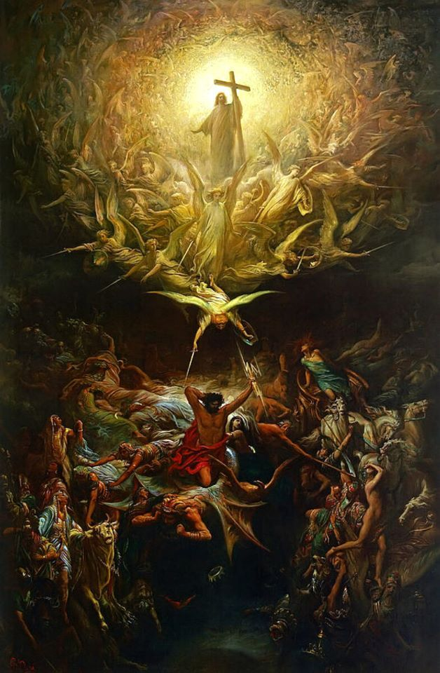
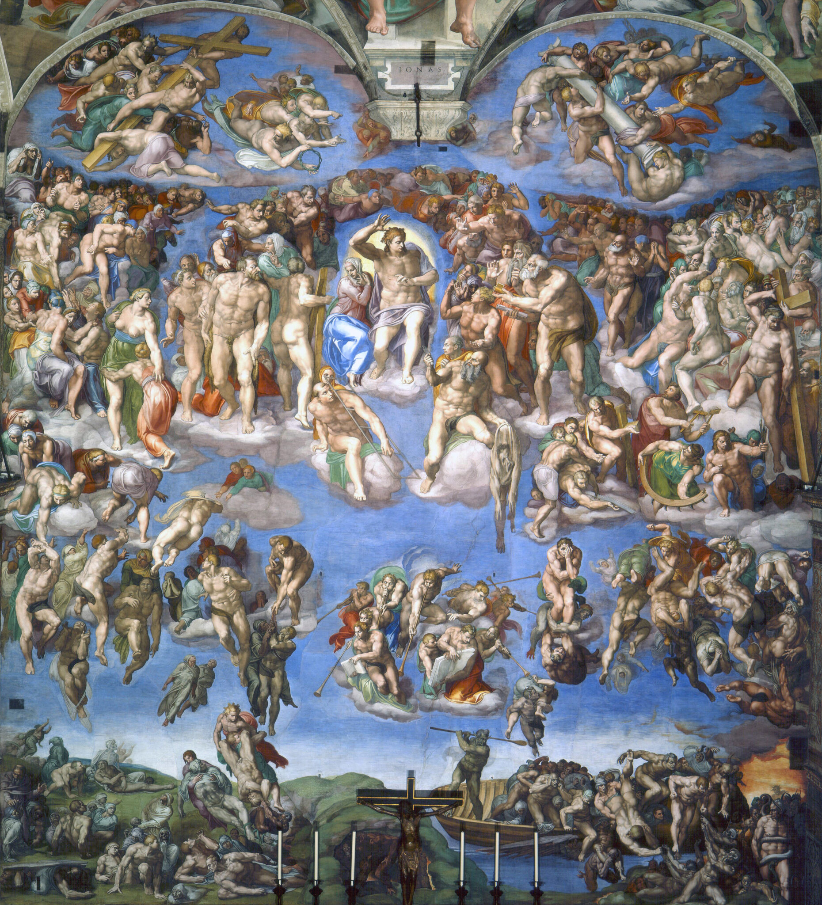

耶稣再来的简介

- 圣经明确预言耶稣要第二次以肉身降临世界（希伯来书9:28）
- 与第一次来相比，耶稣的第二次再来是带着荣耀和审判（马太福音25:31）
耶稣第二次再来的六个主要特点
- 亲自来
- 基督不会派人代替祂，乃是亲自显现（使徒行传 1：11）
- 有身体
- 与第一次道成肉身一样，祂要在可见、荣耀的身体中出现（约翰一书 3：2）
- 可见的
- 众人必看见祂降临（启示录1:7）
- 荣耀的
- 以大能者、万王之王身份降临（马太福音25:31）
- 得胜的
- 战胜一切仇敌，包括最终的死亡（哥林多前书15:24-26）
- 突然的
- 无人知道确切日子，像贼一样在夜间来到（马太福音24:36-42）
对信徒的意义

- 得荣耀的盼望：与基督一同享受永恒生命与复活的身体（腓立比书3:20-21）
- 得赏赐的保证：忠心服事的信徒要在神国中得称赞（马太福音25:21）
- 得安慰的确据：在苦难中有盼望，知道主必亲自作王（约翰福音14:1-3）
- 鼓励成圣：歌罗西书3:4-5
对世人的警告

- 第二次再来也是审判的日子（使徒行传17:31）
- 不信的人将面对永远的刑罚（马太福音25:46）
- 耶稣的再来快而且突然，当警醒预备（马可福音13:33-37）